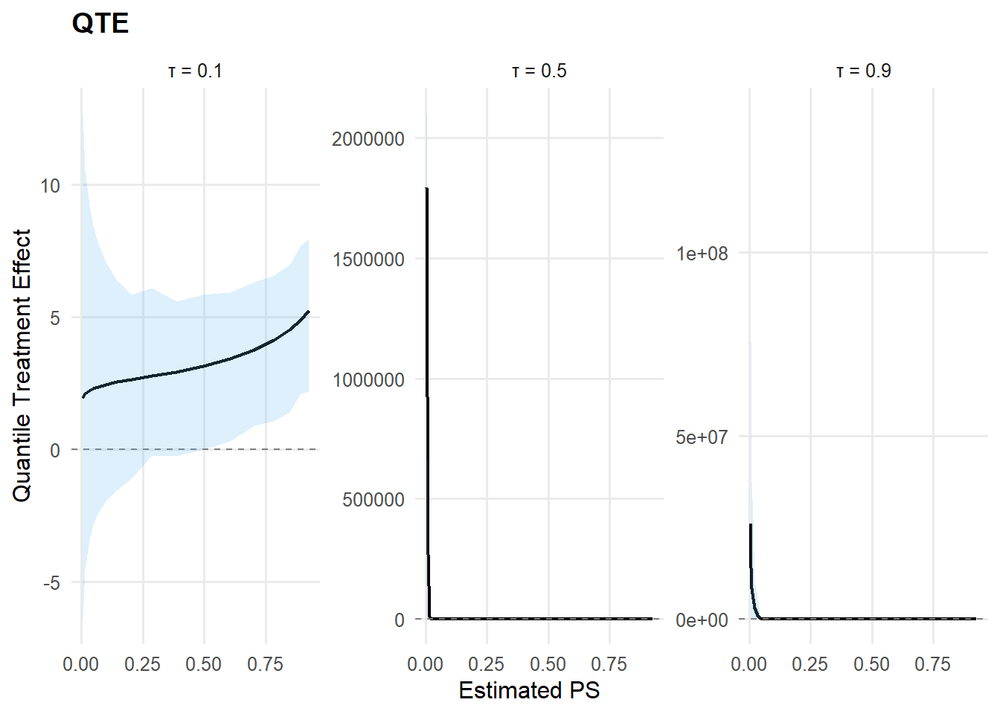
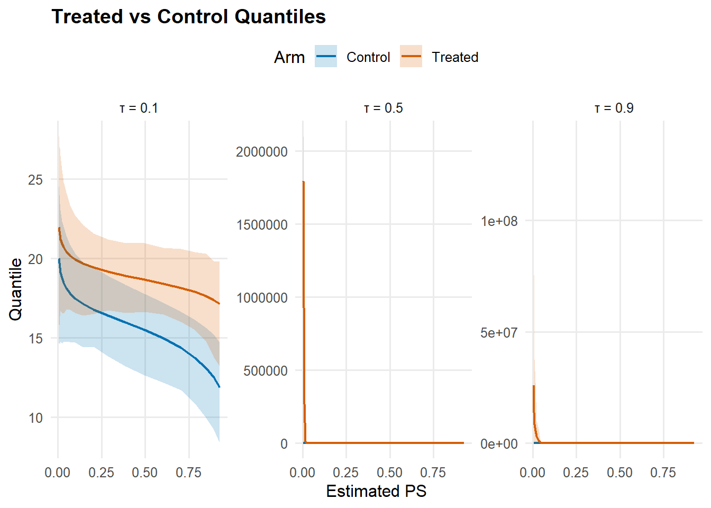

library(DPmixGPD)
data("mtcars", package = "datasets")
df <- mtcars
X <- df[, c("wt", "hp", "qsec", "cyl")]
X <- as.data.frame(X)
T_ind <- df$am
y <- df$mpgCausal Workflow
Overview
This vignette demonstrates the causal inference workflow using build_causal_bundle() and run_mcmc_causal(). The package computes distributional treatment effects that are conditional on covariates:
- Conditional ATE (CATE): (E[Y(1) - Y(0) X])
- Conditional QTE (CQTE): (Q_{Y(1)}(X=x) - Q_{Y(0)}(X=x))
Theory (brief)
The causal workflow models the potential outcome distributions for treated and control groups while adjusting for covariates and (optionally) propensity scores. For each treatment arm \(t \in \{0,1\}\), \[ f_t(y \mid x) = \int K(y; \theta_t(x))\, dG_t(\theta_t), \] and causal estimands are derived from differences in the fitted distributions, such as \(\mathbb{E}[Y(1) - Y(0) \mid X]\) and quantile contrasts.
Conditional vs Marginal Causal Estimands
Conditional Estimands (What This Package Computes)
The causal functions in this package compute conditional treatment effects:
Conditional ATE (CATE): \[\text{CATE}(x) = \mathbb{E}[Y(1) - Y(0) \mid X=x]\] This is the average treatment effect for individuals with covariate values \(x\).
Conditional QTE (CQTE): \[\text{CQTE}(p, x) = Q_{Y(1)}(p \mid X=x) - Q_{Y(0)}(p \mid X=x)\] This is the quantile treatment effect at probability \(p\) for individuals with covariates \(x\).
Marginal Estimands (Population-Level)
Marginal treatment effects integrate over the covariate distribution:
Marginal ATE: \[\text{ATE} = \mathbb{E}_X[\mathbb{E}[Y(1) - Y(0) \mid X]]\] This is the population average treatment effect.
Marginal QTE: \[\text{QTE}(p) = Q_{Y(1)}(p) - Q_{Y(0)}(p)\] where \(Q_{Y(t)}(p)\) is the \(p\)-th quantile of the marginal distribution of \(Y(t)\).
Important: Averaging Conditional Quantiles ≠Marginal Quantile
A common mistake is to average conditional quantiles to get marginal quantiles: \[\mathbb{E}_X[Q_{Y(t)}(p \mid X)] \neq Q_{Y(t)}(p)\]
Example: If treatment shifts the distribution differently for different \(X\) values, the average of conditional medians is generally not equal to the marginal median.
When to Use Each
- Use conditional estimands (default in this package) when:
- You want to understand heterogeneous treatment effects across covariates
- You’re interested in personalized treatment rules
- You want to identify subgroups with large/small effects
- Use marginal estimands when:
- You want a single population-level summary
- You’re reporting overall policy effects
- You need to compute marginal quantiles (requires integrating over \(X\))
Computing Marginal Estimands
To compute marginal estimands from this package:
Marginal ATE: Average the conditional ATE over your sample or population distribution of \(X\):
ate_cond <- ate(fit, newdata = X_population) ate_marginal <- mean(ate_cond$estimate)Marginal QTE: This requires more care:
- Draw samples from the marginal predictive distribution for each arm
- Compute quantiles of these samples
- Difference the quantiles
# Sample from marginal predictive for each arm (integrate over X) X_sample <- X_population[sample(nrow(X_population), 1000, replace=TRUE), ] Y1_samples <- predict(fit$outcome_fit$trt, newdata=X_sample, type="sample", nsim=1000) Y0_samples <- predict(fit$outcome_fit$con, newdata=X_sample, type="sample", nsim=1000) # Compute marginal quantiles Q1 <- quantile(Y1_samples$fit, probs=c(0.1, 0.5, 0.9)) Q0 <- quantile(Y0_samples$fit, probs=c(0.1, 0.5, 0.9)) QTE_marginal <- Q1 - Q0
References
- Firpo, S. (2007). “Efficient semiparametric estimation of quantile treatment effects.” Econometrica, 75(1), 259-276.
- Frölich, M., & Melly, B. (2013). “Unconditional quantile treatment effects under endogeneity.” Journal of Business & Economic Statistics, 31(3), 346-357.
Data Setup
Causal Bundle Construction
The build_causal_bundle() function creates a unified structure containing:
- Propensity score (PS) model (optional)
- Control arm outcome model
- Treated arm outcome model
bundle <- build_causal_bundle(
y = y,
X = X,
T = T_ind,
backend = "sb",
kernel = "normal",
GPD = TRUE,
components = 6,
PS = "logit",
mcmc_outcome = mcmc,
mcmc_ps = mcmc
)
bundleDPmixGPD causal bundle
PS model: Bayesian logit (T | X)
<table class="table" style="width: auto !important; margin-left: auto; margin-right: auto;">
<thead>
<tr>
<th style="text-align:center;"> Field </th>
<th style="text-align:center;"> Treated </th>
<th style="text-align:center;"> Control </th>
</tr>
</thead>
<tbody>
<tr>
<td style="text-align:center;"> Backend </td>
<td style="text-align:center;"> Stick-Breaking Process </td>
<td style="text-align:center;"> Stick-Breaking Process </td>
</tr>
<tr>
<td style="text-align:center;"> Kernel </td>
<td style="text-align:center;"> normal </td>
<td style="text-align:center;"> normal </td>
</tr>
<tr>
<td style="text-align:center;"> Components </td>
<td style="text-align:center;"> 6 </td>
<td style="text-align:center;"> 6 </td>
</tr>
<tr>
<td style="text-align:center;"> GPD tail </td>
<td style="text-align:center;"> TRUE </td>
<td style="text-align:center;"> TRUE </td>
</tr>
<tr>
<td style="text-align:center;"> Epsilon </td>
<td style="text-align:center;"> 0.025 </td>
<td style="text-align:center;"> 0.025 </td>
</tr>
</tbody>
</table>
Outcome PS included: TRUE
n (control) = 19 | n (treated) = 13 MCMC Sampling
fit <- run_mcmc_causal(bundle, show_progress = FALSE)Defining modelBuilding modelSetting data and initial valuesChecking model sizes and dimensions [Note] This model is not fully initialized. This is not an error.
To see which variables are not initialized, use model$initializeInfo().
For more information on model initialization, see help(modelInitialization).Checking model calculationsCompiling
[Note] This may take a minute.
[Note] Use 'showCompilerOutput = TRUE' to see C++ compilation details.
Compiling
[Note] This may take a minute.
[Note] Use 'showCompilerOutput = TRUE' to see C++ compilation details.running chain 1...Defining model [Note] Registering 'dNormGpd' as a distribution based on its use in BUGS code. If you make changes to the nimbleFunctions for the distribution, you must call 'deregisterDistributions' before using the distribution in BUGS code for those changes to take effect.Building modelSetting data and initial valuesChecking model sizes and dimensions [Note] This model is not fully initialized. This is not an error.
To see which variables are not initialized, use model$initializeInfo().
For more information on model initialization, see help(modelInitialization).Checking model calculationsCompiling
[Note] This may take a minute.
[Note] Use 'showCompilerOutput = TRUE' to see C++ compilation details.
Compiling
[Note] This may take a minute.
[Note] Use 'showCompilerOutput = TRUE' to see C++ compilation details. [Warning] To calculate WAIC, set 'WAIC = TRUE', in addition to having enabled WAIC in building the MCMC.running chain 1...Compiling
[Note] This may take a minute.
[Note] Use 'showCompilerOutput = TRUE' to see C++ compilation details.Calculating WAIC.Defining modelBuilding modelSetting data and initial valuesChecking model sizes and dimensions [Note] This model is not fully initialized. This is not an error.
To see which variables are not initialized, use model$initializeInfo().
For more information on model initialization, see help(modelInitialization).Checking model calculationsCompiling
[Note] This may take a minute.
[Note] Use 'showCompilerOutput = TRUE' to see C++ compilation details.
Compiling
[Note] This may take a minute.
[Note] Use 'showCompilerOutput = TRUE' to see C++ compilation details. [Warning] To calculate WAIC, set 'WAIC = TRUE', in addition to having enabled WAIC in building the MCMC.running chain 1...Compiling
[Note] This may take a minute.
[Note] Use 'showCompilerOutput = TRUE' to see C++ compilation details.Calculating WAIC.Average Treatment Effect (ATE)
ate_result <- ate(fit, interval = "hpd", nsim_mean = 100)
print(ate_result)ATE (Average Treatment Effect)
Prediction points: 32
Conditional (covariates): YES
Propensity score used: YES
PS scale: logit
Posterior mean draws: 100
Credible interval: hpd
ATE estimates (treated - control):
<table class="table" style="width: auto !important; margin-left: auto; margin-right: auto;">
<thead>
<tr>
<th style="text-align:center;"> id </th>
<th style="text-align:center;"> estimate </th>
<th style="text-align:center;"> lower </th>
<th style="text-align:center;"> upper </th>
</tr>
</thead>
<tbody>
<tr>
<td style="text-align:center;"> 1 </td>
<td style="text-align:center;"> 2.088 </td>
<td style="text-align:center;"> -0.678 </td>
<td style="text-align:center;"> 5.515 </td>
</tr>
<tr>
<td style="text-align:center;"> 2 </td>
<td style="text-align:center;"> 1.979 </td>
<td style="text-align:center;"> -1.118 </td>
<td style="text-align:center;"> 4.931 </td>
</tr>
<tr>
<td style="text-align:center;"> 3 </td>
<td style="text-align:center;"> 13.789 </td>
<td style="text-align:center;"> -1.113 </td>
<td style="text-align:center;"> 10.744 </td>
</tr>
<tr>
<td style="text-align:center;"> 4 </td>
<td style="text-align:center;"> 2810.025 </td>
<td style="text-align:center;"> -2.466 </td>
<td style="text-align:center;"> 1.915e+04 </td>
</tr>
<tr>
<td style="text-align:center;"> 5 </td>
<td style="text-align:center;"> 9.068e+08 </td>
<td style="text-align:center;"> -4.631 </td>
<td style="text-align:center;"> 5.702 </td>
</tr>
<tr>
<td style="text-align:center;"> 6 </td>
<td style="text-align:center;"> -3.165e+12 </td>
<td style="text-align:center;"> -1.344 </td>
<td style="text-align:center;"> 1.111e+04 </td>
</tr>
</tbody>
</table>... (26 more rows)X_new <- data.frame(
wt = seq(min(X$wt), max(X$wt), length.out = 20),
hp = stats::median(X$hp),
qsec = stats::median(X$qsec),
cyl = stats::median(X$cyl)
)
ate_grid <- ate(fit, newdata = X_new, interval = "hpd", nsim_mean = 100, level = 0.90)
print(ate_grid)ATE (Average Treatment Effect)
Prediction points: 20
Conditional (covariates): YES
Propensity score used: YES
PS scale: logit
Posterior mean draws: 100
Credible interval: hpd
ATE estimates (treated - control):
<table class="table" style="width: auto !important; margin-left: auto; margin-right: auto;">
<thead>
<tr>
<th style="text-align:center;"> id </th>
<th style="text-align:center;"> estimate </th>
<th style="text-align:center;"> lower </th>
<th style="text-align:center;"> upper </th>
</tr>
</thead>
<tbody>
<tr>
<td style="text-align:center;"> 1 </td>
<td style="text-align:center;"> 5.124 </td>
<td style="text-align:center;"> 2.712 </td>
<td style="text-align:center;"> 8.3 </td>
</tr>
<tr>
<td style="text-align:center;"> 2 </td>
<td style="text-align:center;"> 5417.535 </td>
<td style="text-align:center;"> 1.988 </td>
<td style="text-align:center;"> 8.134 </td>
</tr>
<tr>
<td style="text-align:center;"> 3 </td>
<td style="text-align:center;"> 3.998 </td>
<td style="text-align:center;"> -0.113 </td>
<td style="text-align:center;"> 6.41 </td>
</tr>
<tr>
<td style="text-align:center;"> 4 </td>
<td style="text-align:center;"> 3.483 </td>
<td style="text-align:center;"> 0.602 </td>
<td style="text-align:center;"> 7.067 </td>
</tr>
<tr>
<td style="text-align:center;"> 5 </td>
<td style="text-align:center;"> 3.103 </td>
<td style="text-align:center;"> -0.143 </td>
<td style="text-align:center;"> 6.11 </td>
</tr>
<tr>
<td style="text-align:center;"> 6 </td>
<td style="text-align:center;"> 2.537e+04 </td>
<td style="text-align:center;"> 0.064 </td>
<td style="text-align:center;"> 5.817 </td>
</tr>
</tbody>
</table>... (14 more rows)summary(ate_grid)ATE Summary
==================================================
Prediction points: 20
Conditional: YES | PS used: YES
Posterior mean draws: 100
Interval: hpd
Model specification:
Backend (trt/con): sb / sb
Kernel (trt/con): normal / normal
GPD tail (trt/con): YES / YES
ATE statistics:
Mean: -1.189e+16 | Median: 5194.159
Range: [-2.359e+17, 1.613e+06]
SD: 5.272e+16
Credible interval width:
Mean: 3.498e+06 | Median: 6.907
Range: [5.111, 2.089e+07]ATE Visualization
The plot() method for ATE objects supports multiple visualization types:
type = "both"(default): Returns a list withtrt_controlandtreatment_effectplotstype = "effect": Treatment effect curve with credible intervalstype = "arms": Treated vs control mean outcomes
ate_plots <- plot(ate_grid)
ate_plots$treatment_effectate_plots$trt_controlQuantile Treatment Effect (QTE)
probs <- c(0.1, 0.5, 0.9)
qte_result <- qte(fit, probs = probs, interval = "hpd")
print(qte_result)QTE (Quantile Treatment Effect)
Prediction points: 32
Quantile grid: 0.1, 0.5, 0.9
Conditional (covariates): YES
Propensity score used: YES
PS scale: logit
Credible interval: hpd
QTE estimates (treated - control):
<table class="table" style="width: auto !important; margin-left: auto; margin-right: auto;">
<thead>
<tr>
<th style="text-align:center;"> index </th>
<th style="text-align:center;"> id </th>
<th style="text-align:center;"> estimate </th>
<th style="text-align:center;"> lower </th>
<th style="text-align:center;"> upper </th>
</tr>
</thead>
<tbody>
<tr>
<td style="text-align:center;"> 0.1 </td>
<td style="text-align:center;"> 1 </td>
<td style="text-align:center;"> 2.71 </td>
<td style="text-align:center;"> 0.326 </td>
<td style="text-align:center;"> 5.719 </td>
</tr>
<tr>
<td style="text-align:center;"> 0.1 </td>
<td style="text-align:center;"> 2 </td>
<td style="text-align:center;"> 2.613 </td>
<td style="text-align:center;"> -0.462 </td>
<td style="text-align:center;"> 5.445 </td>
</tr>
<tr>
<td style="text-align:center;"> 0.1 </td>
<td style="text-align:center;"> 3 </td>
<td style="text-align:center;"> 4.101 </td>
<td style="text-align:center;"> 0.636 </td>
<td style="text-align:center;"> 6.743 </td>
</tr>
<tr>
<td style="text-align:center;"> 0.1 </td>
<td style="text-align:center;"> 4 </td>
<td style="text-align:center;"> 3.737 </td>
<td style="text-align:center;"> 0.256 </td>
<td style="text-align:center;"> 7.343 </td>
</tr>
<tr>
<td style="text-align:center;"> 0.1 </td>
<td style="text-align:center;"> 5 </td>
<td style="text-align:center;"> 2.074 </td>
<td style="text-align:center;"> -1.049 </td>
<td style="text-align:center;"> 5.467 </td>
</tr>
<tr>
<td style="text-align:center;"> 0.1 </td>
<td style="text-align:center;"> 6 </td>
<td style="text-align:center;"> 4.105 </td>
<td style="text-align:center;"> -0.031 </td>
<td style="text-align:center;"> 8.716 </td>
</tr>
</tbody>
</table>... (90 more rows)qte_grid <- qte(fit, probs = probs, newdata = X_new, interval = "hpd")
print(qte_grid)QTE (Quantile Treatment Effect)
Prediction points: 20
Quantile grid: 0.1, 0.5, 0.9
Conditional (covariates): YES
Propensity score used: YES
PS scale: logit
Credible interval: hpd
QTE estimates (treated - control):
<table class="table" style="width: auto !important; margin-left: auto; margin-right: auto;">
<thead>
<tr>
<th style="text-align:center;"> index </th>
<th style="text-align:center;"> id </th>
<th style="text-align:center;"> estimate </th>
<th style="text-align:center;"> lower </th>
<th style="text-align:center;"> upper </th>
</tr>
</thead>
<tbody>
<tr>
<td style="text-align:center;"> 0.1 </td>
<td style="text-align:center;"> 1 </td>
<td style="text-align:center;"> 5.257 </td>
<td style="text-align:center;"> 2.193 </td>
<td style="text-align:center;"> 7.946 </td>
</tr>
<tr>
<td style="text-align:center;"> 0.1 </td>
<td style="text-align:center;"> 2 </td>
<td style="text-align:center;"> 4.886 </td>
<td style="text-align:center;"> 2.11 </td>
<td style="text-align:center;"> 7.693 </td>
</tr>
<tr>
<td style="text-align:center;"> 0.1 </td>
<td style="text-align:center;"> 3 </td>
<td style="text-align:center;"> 4.514 </td>
<td style="text-align:center;"> 1.418 </td>
<td style="text-align:center;"> 6.963 </td>
</tr>
<tr>
<td style="text-align:center;"> 0.1 </td>
<td style="text-align:center;"> 4 </td>
<td style="text-align:center;"> 4.143 </td>
<td style="text-align:center;"> 1.063 </td>
<td style="text-align:center;"> 6.571 </td>
</tr>
<tr>
<td style="text-align:center;"> 0.1 </td>
<td style="text-align:center;"> 5 </td>
<td style="text-align:center;"> 3.777 </td>
<td style="text-align:center;"> 0.912 </td>
<td style="text-align:center;"> 6.335 </td>
</tr>
<tr>
<td style="text-align:center;"> 0.1 </td>
<td style="text-align:center;"> 6 </td>
<td style="text-align:center;"> 3.438 </td>
<td style="text-align:center;"> 0.319 </td>
<td style="text-align:center;"> 5.932 </td>
</tr>
</tbody>
</table>... (54 more rows)summary(qte_grid)QTE Summary
==================================================
Prediction points: 20 | Quantiles: 3
Quantile grid: 0.1, 0.5, 0.9
Conditional: YES | PS used: YES
Interval: hpd
Model specification:
Backend (trt/con): sb / sb
Kernel (trt/con): normal / normal
GPD tail (trt/con): YES / YES
QTE by quantile:
<table class="table" style="width: auto !important; margin-left: auto; margin-right: auto;">
<thead>
<tr>
<th style="text-align:center;"> quantile </th>
<th style="text-align:center;"> mean_qte </th>
<th style="text-align:center;"> median_qte </th>
<th style="text-align:center;"> min_qte </th>
<th style="text-align:center;"> max_qte </th>
<th style="text-align:center;"> sd_qte </th>
</tr>
</thead>
<tbody>
<tr>
<td style="text-align:center;"> 0.1 </td>
<td style="text-align:center;"> 2.982 </td>
<td style="text-align:center;"> 2.598 </td>
<td style="text-align:center;"> 1.942 </td>
<td style="text-align:center;"> 5.257 </td>
<td style="text-align:center;"> 1.021 </td>
</tr>
<tr>
<td style="text-align:center;"> 0.5 </td>
<td style="text-align:center;"> 1.500e+05 </td>
<td style="text-align:center;"> 3.691 </td>
<td style="text-align:center;"> 2.364 </td>
<td style="text-align:center;"> 1.793e+06 </td>
<td style="text-align:center;"> 4.410e+05 </td>
</tr>
<tr>
<td style="text-align:center;"> 0.9 </td>
<td style="text-align:center;"> 2.913e+06 </td>
<td style="text-align:center;"> 4.697 </td>
<td style="text-align:center;"> 0.84 </td>
<td style="text-align:center;"> 2.595e+07 </td>
<td style="text-align:center;"> 6.527e+06 </td>
</tr>
</tbody>
</table>
Credible interval width:
Mean: 4.959e+06 | Median: 11.545
Range: [4.291, 1.379e+08]QTE Visualization
The plot() method for QTE objects supports multiple visualization types:
type = "both"(default): Returns a list withtrt_controlandtreatment_effectplotstype = "effect": Quantile treatment effect curves faceted by quantile leveltype = "arms": Treated vs control quantile curves
qte_plots <- plot(qte_grid)
qte_plots$treatment_effect
qte_plots$trt_control
Model Summary
summary(fit)-- PS fit --
DPmixGPD PS fit
model: logit
-- Outcome fits --
[control]
MixGPD fit | backend: Stick-Breaking Process | kernel: Normal Distribution | GPD tail: TRUE
n = 19 | components = 6 | epsilon = 0.025
MCMC: niter=400, nburnin=100, thin=2, nchains=1
Fit
Use summary() for posterior summaries; plot() for diagnostics; predict() for predictions.
[treated]
MixGPD fit | backend: Stick-Breaking Process | kernel: Normal Distribution | GPD tail: TRUE
n = 13 | components = 6 | epsilon = 0.025
MCMC: niter=400, nburnin=100, thin=2, nchains=1
Fit
Use summary() for posterior summaries; plot() for diagnostics; predict() for predictions.